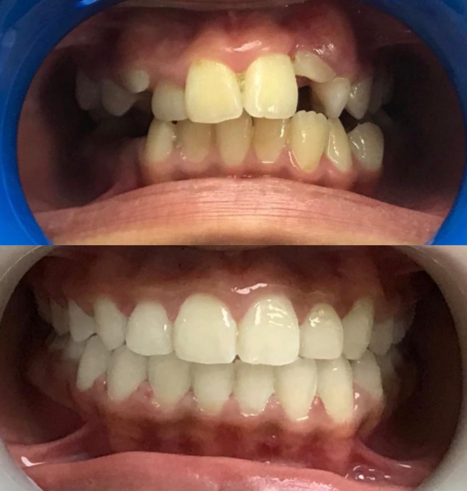
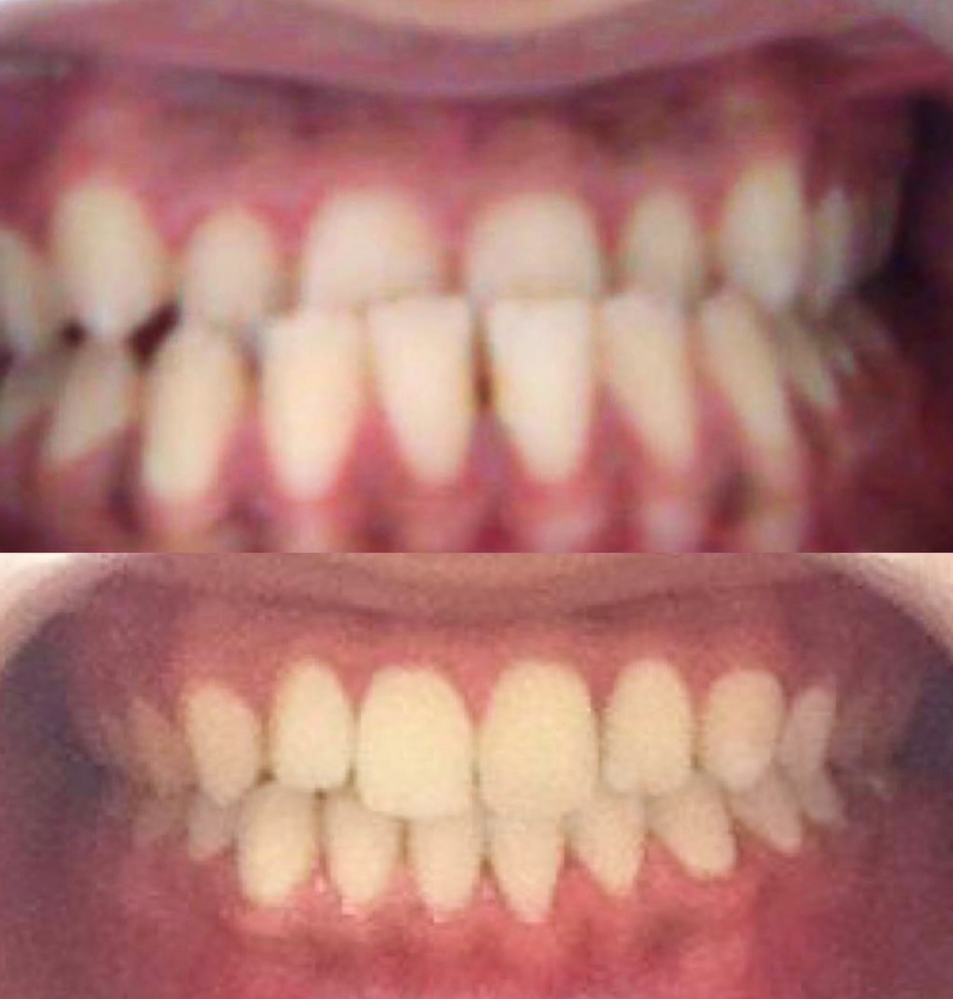
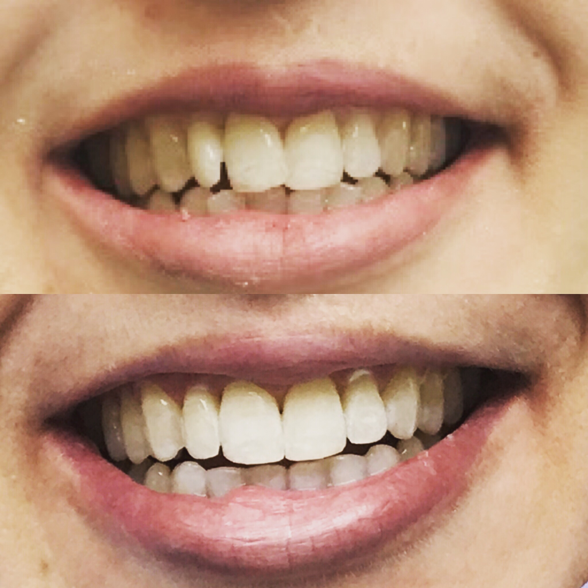
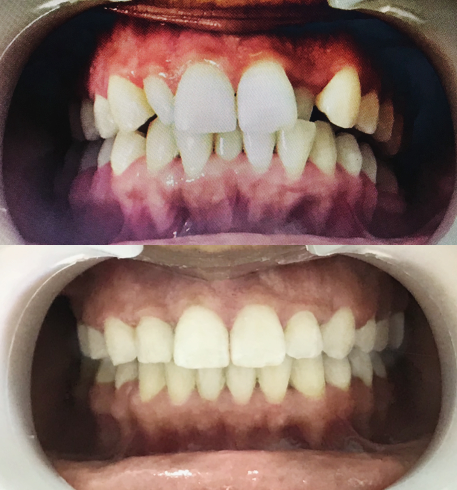
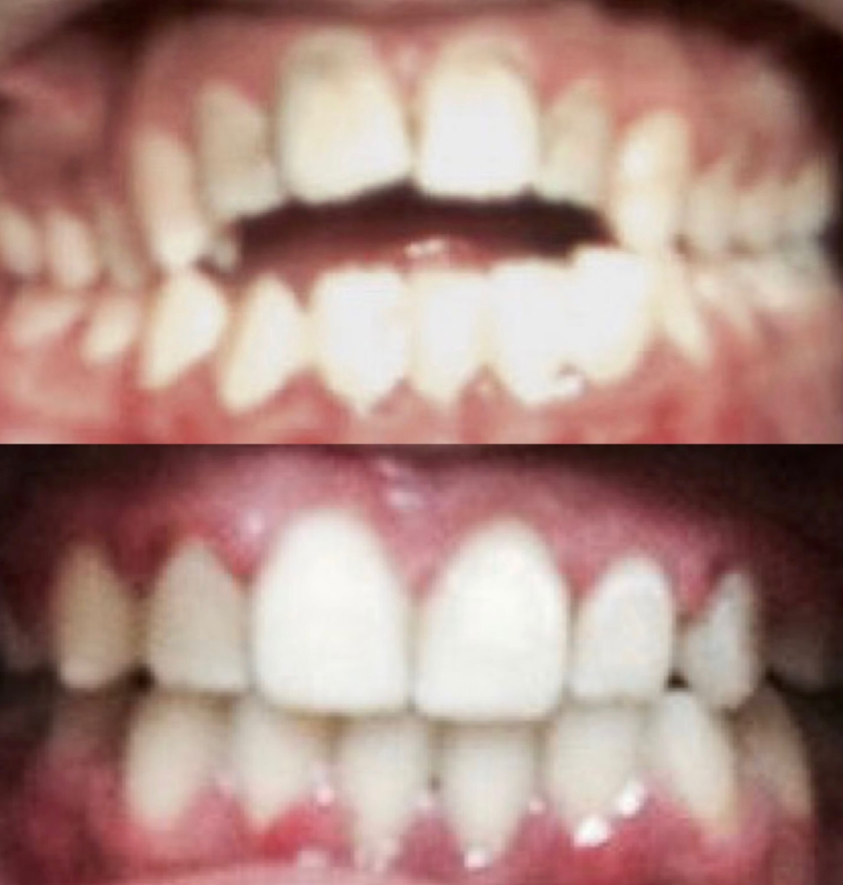
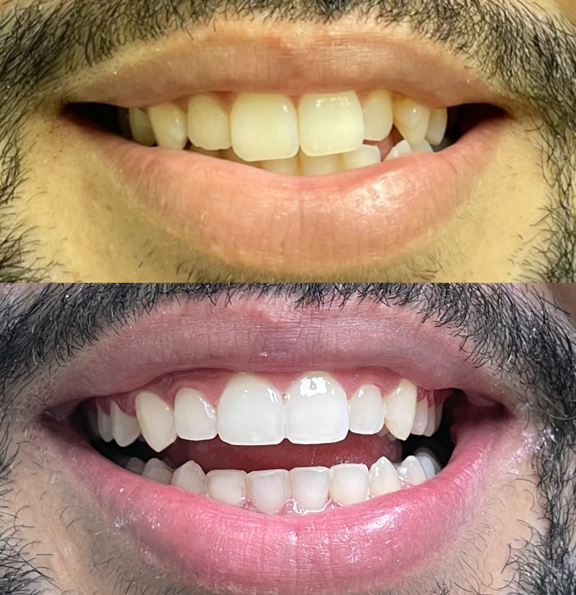
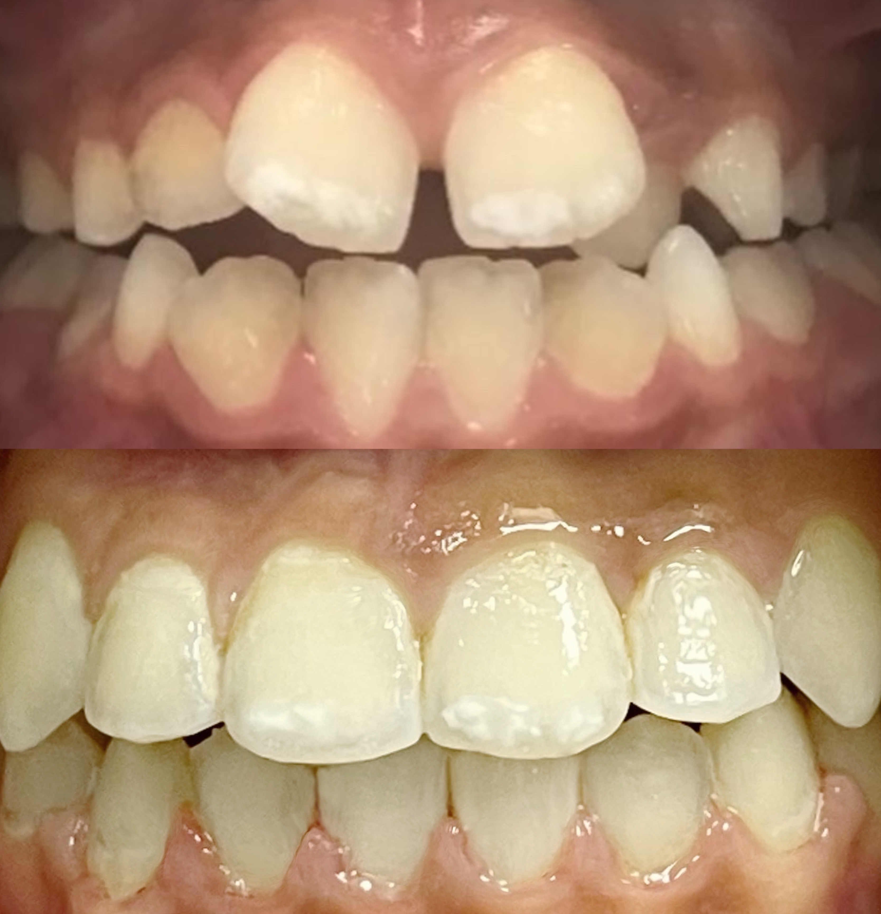
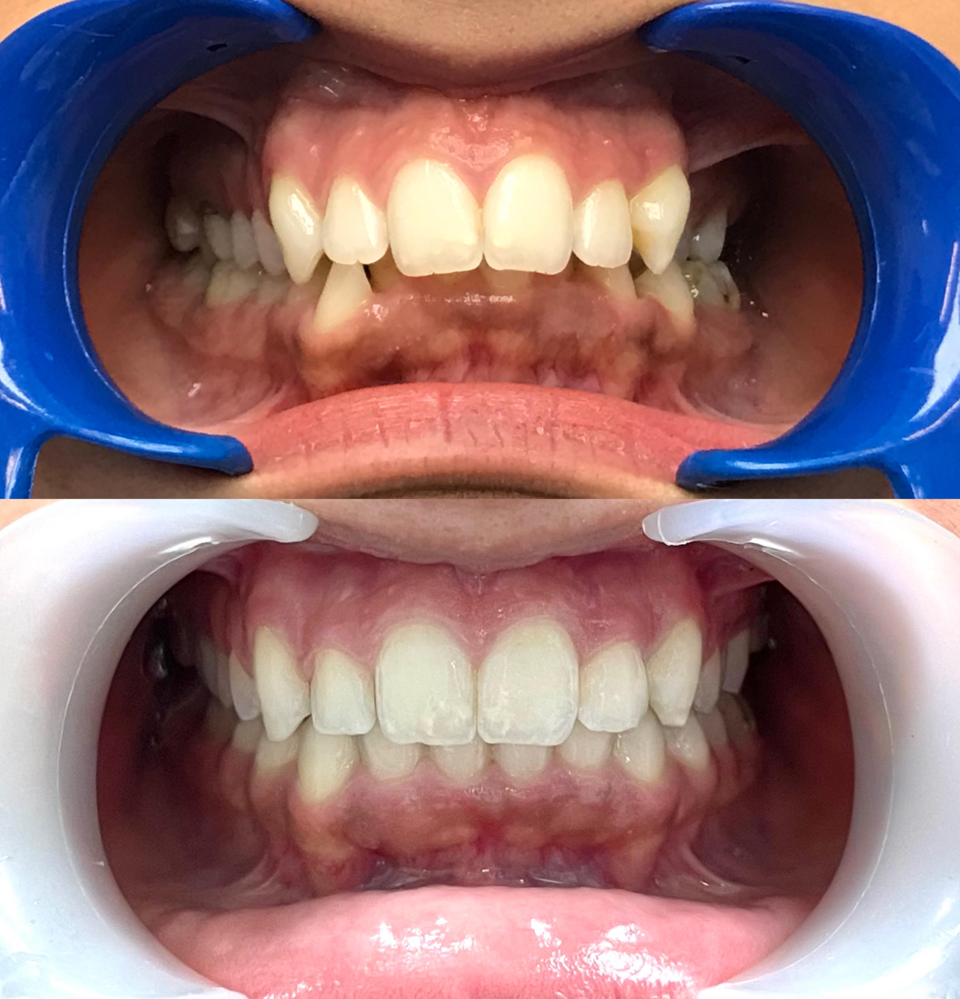
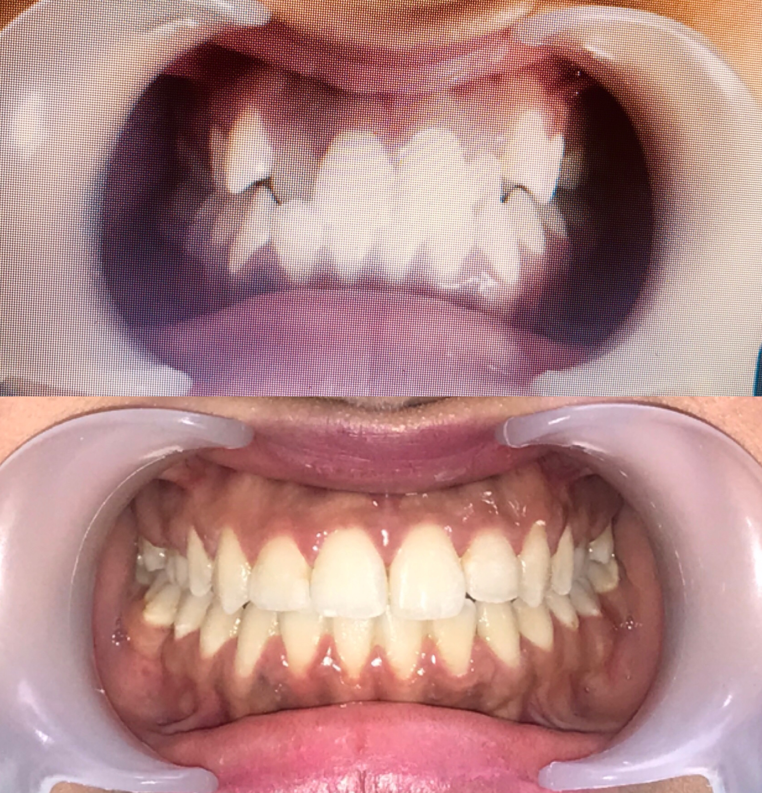

Orthodontie à Rabat — Bagues & Gouttières Invisalign
Des dents mal alignées ne sont pas une fatalité. Bagues métalliques, céramique discrète ou gouttières Invisalign totalement invisibles : nous choisissons ensemble la solution adaptée à votre bouche et à votre mode de vie. Un sourire aligné, à tout âge.
- 20 ans d'expérience
- Devis gratuit en consultation
- RDV en ligne
- Paiement en plusieurs fois
Qu'est-ce que l'orthodontie ?
L'orthodontie est la discipline dentaire qui corrige la position des dents et des mâchoires. Chevauchements, dents en avant, espaces disgracieux, béance ou décalage entre le haut et le bas : tous ces défauts d'alignement se traitent en appliquant des forces légères et continues sur les dents, qui se déplacent progressivement jusqu'à leur position idéale.
Au-delà de l'esthétique, un bon alignement a un réel bénéfice sur la santé. Des dents bien positionnées se brossent mieux, retiennent moins de plaque, et réduisent donc le risque de caries et de maladies des gencives. Une occlusion équilibrée limite aussi l'usure prématurée de l'émail et les douleurs articulaires de la mâchoire.
Au cabinet du Dr Khamlich, à la Clinique Dentaire Arribat de Rabat Agdal, nous proposons l'ensemble des techniques modernes d'orthodontie. Les brackets métalliques restent la solution la plus polyvalente et la plus économique, capable de traiter les cas les plus complexes. Les brackets autoligaturants réduisent les frottements et espacent les rendez-vous de réglage. Les brackets en céramique, de la couleur de la dent, se font quasiment oublier — ce sont les fameuses « bagues transparentes ». Enfin, les gouttières Invisalign sont amovibles et pratiquement invisibles : vous les retirez pour manger et pour vous brosser les dents.
Le traitement commence toujours par un bilan complet : examen clinique, radiographies, photographies et empreintes numériques 3D. Ces éléments permettent d'établir un plan de traitement précis et de vous montrer la trajectoire prévue de vos dents. Le devis détaillé vous est remis lors de cette consultation, qui coûte 200 Dhs.
L'orthodontie n'a pas d'âge. Chez l'enfant, une intervention précoce guide la croissance des mâchoires et évite des traitements plus lourds. Chez l'adolescent, c'est la période idéale car les dents définitives sont en place. Et chez l'adulte, de plus en plus de patients franchissent le pas, souvent avec des solutions discrètes comme la céramique ou Invisalign.
Les bénéfices d'un traitement orthodontique
- Un sourire harmonieux qui change durablement la confiance en soi
- Une hygiène facilitée : moins de caries et de problèmes de gencives
- Une meilleure mastication et une occlusion équilibrée
- Moins d'usure dentaire et de tensions sur l'articulation de la mâchoire
- Des solutions discrètes : céramique ou gouttières invisibles pour les adultes
- Un résultat stable grâce à une contention posée en fin de traitement
Comment ça se passe ?
-
Consultation & bilan (200 Dhs)
Examen clinique, radiographies, photos et empreintes numériques. Le Dr Khamlich vous explique les options et vous remet votre devis personnalisé le jour même.
-
Pose de l'appareil
Séance indolore d'environ une heure : collage des brackets ou remise de votre première série de gouttières Invisalign.
-
Rendez-vous de réglage
Toutes les 4 à 8 semaines selon la technique, pour activer l'appareil et suivre la progression des dents.
-
Dépose et contention
Une fois l'alignement obtenu, l'appareil est retiré et un fil de contention (ou une gouttière de nuit) maintient le résultat dans le temps.
Tarifs
Tarifs orthodontie à Rabat
Des tarifs clairs, annoncés avant de commencer. Le devis exact vous est remis en consultation.
-
Le plus demandé
Brackets métalliques
12 500 Dhs
par mâchoire — 25 000 Dhs haut + bas
La solution de référence : efficace sur tous les cas, y compris les plus complexes, au meilleur rapport qualité-prix.
-
Brackets métalliques autoligaturants
Sur devis
à partir de 12 500 Dhs / mâchoire
Moins de frottements, un confort accru et des rendez-vous de réglage plus espacés.
-
Brackets en céramique
Sur devis
discrétion maximale
Les « bagues transparentes » : de la couleur de la dent, elles passent quasiment inaperçues.
-
Céramique autoligaturante
Jusqu'à 45 000 Dhs
haut + bas
Le haut de gamme : discrétion de la céramique et confort de l'autoligaturant réunis.
-
Gouttières Invisalign
Sur devis
selon le nombre de gouttières
Amovibles et invisibles. Le tarif dépend directement de la complexité et de la durée du traitement.
-
Consultation & devis
200 Dhs
bilan complet inclus
Examen, radiographies et plan de traitement chiffré remis le jour même.
Tarifs indicatifs, susceptibles d'évoluer à la hausse comme à la baisse selon la complexité de votre cas. La consultation coûte 200 Dhs et votre devis personnalisé y est établi et remis. Des facilités de paiement sont possibles.
Nos Avant-Après
Résultats avant / après
Des cas d'orthodontie réellement traités au cabinet du Dr Khamlich.









FAQ
Questions fréquentes
-
Dès 6 à 7 ans, un premier bilan est recommandé : à cet âge, on peut guider la croissance des mâchoires et éviter des traitements plus lourds plus tard. La période idéale pour un traitement complet reste l'adolescence, lorsque toutes les dents définitives sont en place. Cela dit, l'orthodontie n'a pas de limite d'âge : nous traitons régulièrement des adultes de 30, 40 ou 50 ans, souvent avec des solutions discrètes comme la céramique ou Invisalign.
-
Oui. Ce que l'on appelle couramment « bagues transparentes », ce sont les brackets en céramique : ils sont de la couleur de la dent et passent donc quasiment inaperçus, contrairement aux brackets métalliques. Nous les proposons en version classique et en version autoligaturante, encore plus confortable. Si vous souhaitez une discrétion totale, les gouttières Invisalign sont l'alternative la plus invisible.
-
En moyenne 18 à 24 mois. Un cas simple d'alignement léger peut se régler en 8 à 12 mois, tandis qu'un cas complexe impliquant un décalage des mâchoires ou des extractions peut demander jusqu'à 30 mois. La durée exacte vous est annoncée dès la consultation, après l'étude de vos radiographies. Le respect des rendez-vous de réglage influence directement la durée totale.
-
Pour la grande majorité des cas — chevauchements, espaces, corrections légères à modérées — Invisalign donne d'excellents résultats, équivalents aux bagues. Pour les cas plus complexes (fortes rotations, mouvements importants de racines, décalages squelettiques), les brackets restent souvent plus indiqués. Un point important : les gouttières doivent être portées 20 à 22 heures par jour. Leur efficacité dépend donc directement de votre assiduité. Le Dr Khamlich vous dira franchement en consultation quelle option est la plus adaptée à votre cas.
-
La pose de l'appareil n'est pas douloureuse : c'est une séance de collage, sans piqûre ni fraise. Dans les 2 à 3 jours qui suivent la pose et chaque réglage, il est normal de ressentir une gêne ou une sensibilité à la mastication, le temps que les dents commencent à bouger. Un antalgique simple suffit largement, et cette sensation disparaît rapidement. Les techniques autoligaturantes et Invisalign, qui appliquent des forces plus légères, sont généralement décrites comme plus confortables.
-
Oui, nous proposons des facilités de paiement. Le règlement peut être échelonné sur la durée du traitement, ce qui rend l'orthodontie accessible sans avoir à tout avancer au départ. Les modalités précises sont définies avec vous lors de la consultation, en même temps que la remise du devis.
-
C'est une étape essentielle et trop souvent négligée : la contention. Après la dépose, un fil très fin est collé derrière les dents et/ou une gouttière de nuit vous est remise. Sans cette contention, les dents ont naturellement tendance à revenir vers leur position d'origine. Elle se porte plusieurs années, et son suivi fait partie intégrante de votre traitement chez nous.
-
Pas systématiquement. L'extraction n'est envisagée que lorsqu'il manque réellement de place sur l'arcade pour aligner toutes les dents. Beaucoup de cas se traitent aujourd'hui sans extraction, grâce à des techniques d'expansion ou de recul molaire. Cette décision est prise après l'analyse complète de vos radiographies et vous est expliquée clairement avant de commencer.
Réservation en ligne
Prendre rendez-vous pour votre orthodontie
Réservez directement en ligne, sans quitter le site.
Un souci avec le formulaire ? Appelez-nous directement au 06 11 38 11 11.
Nous trouver
Clinique Dentaire Arribat — Rabat Agdal
2 Rue Oued Souss, Agdal, Rabat — Ouvrir dans Google Maps →
Infos pratiques
-
Adresse
2 Rue Oued Souss, Agdal, Rabat, Maroc -
Téléphone
+212 6 11 38 11 11 -
Horaires
Lundi – Vendredi : 9h00 – 18h00
Samedi : 9h00 – 13h00 -
Itinéraire
Obtenir l'itinéraire -
WhatsApp
Nous écrire sur WhatsApp